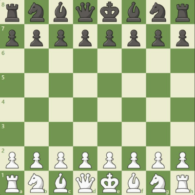

Funclub chess
Gli scacchi
Cosa sono?
Gli scacchi sono un gioco di strategia che si svolge su una tavola quadrata detta scacchiera, formata da 64 caselle di due colori alternati, sulla quale ogni giocatore dispone di 16 pezzi.
Ogni sfidante posside un re, una donna, due alfieri, due cavalli, due torri e otto pedoni.
Ogni casella può essere occupata da un solo pezzo, che può catturare o "mangiare" il pezzo avversario andando a occuparne la casella; obiettivo del gioco è dare scacco matto, ovvero minacciare la cattura del re avversario in modo tale che l'altro giocatore non possa eseguire mosse legali.
Come muovre i pezzi
Ciascun pezzo degli scacchi si muove con precise modalità. Si posso muoversi su una casa occupata da un pezzo avversario, effettuando in tal caso una cattura ovvero viene tolto il pezzo nemico prendendo il posseso della casella. Si dice che un pezzo attacca una casa se esso può muoversi su di essa.
- La torre può muoversi su una qualunque casa della stessa traversa o della stessa colonna rispetto a quella in cui si trova, purché per raggiungerla non debba attraversare case occupate dai pezzi.
- L'alfiere può muoversi su una qualunque casa della stessa diagonale rispetto a quella in cui si trova. Ciascun alfiere non può mai cambiare il colore delle case su cui si muove e i due alfieri inizialmente a disposizione del giocatore si muovono uno solo su case bianche e l'altro solo su case nere. Per questo gli alfieri vengono definiti alfiere campochiaro o alfiere camposcuro a seconda del colore delle case in cui si trovano.
Aperture
Alcune aperture importanti e molto giocate nei tornei:
- Gambetto di donna (1.d4 d5 2.c4)
- Difesa siciliana (1.e4 c5)
- Partita inglese (1.c4 ...)
- Difesa francese (1.e4 e6)
- Difesa est-indiana (1.d4 Cf6 2.c4 g6 3.Cc3 Ag7)
- Partita spagnola (1.e4 e5 2.Cf3 Cc6 3.Ab5)
- Difesa Caro-Kann (1.e4 c6)
- Apertura Réti (1.Cf3 d5 2.c4)
- Attacco est-indiano (1.Cf3 ... 2.g3)
- Difesa olandese (1.d4 f5)
- Difesa nimzo-indiana (1. d4 Cf6 2. c4 e6 3. Cc3 Ab4)
- Difesa ovest-indiana (1.d4 Cf6 2.c4 e6 3.Cf3 b6)
- Gambetto di donna rifiutato (1. d4 d5 2. c4 e6)
- Gambetto di donna accettato (1. d4 d5 2. c4 dxc4)
- Gambetto di re (1.e4 e5 2.f4)
- Partita italiana (1.e4 e5 2.Cf3 Cc6 3.Ac4 Ac5 4.c3)
- Partita catalana (1.d4 Cf6 2.c4 e6 3.g3 d5)
Prova a sfidarmi
Il mio profilo su chess.com : Tano02
Le mie statistiche sempre aggiornate : Stats
Inviami la richiesta di amicizia per miglioare assieme : Raggiungiamo il primo posto
Dai un occhiata ai giocatori più forti al momento
I più forti giocartori al momento sono:
OPEN : Carlsen Magnus
WOMEN : Hou, Yifan
JUNIORS : Gukesh Dommaraju
GIRLS: Divya Deshmukh
I seguenti nomi sono stati presi direttamento dalla classifica dalla federazione internazionale degli scacchi, nota con l'acronimo francese FIDE, è un'organizzazione internazionale che regolamenta e controlla l'attività scacchistica a livello mondiale